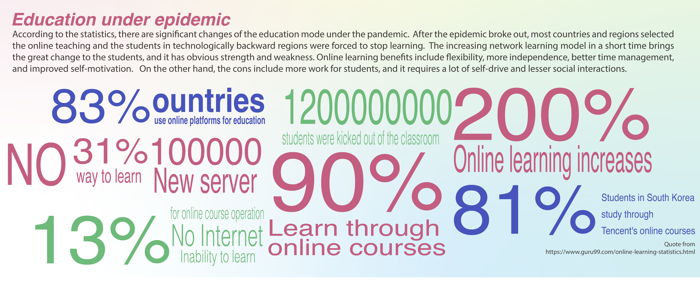
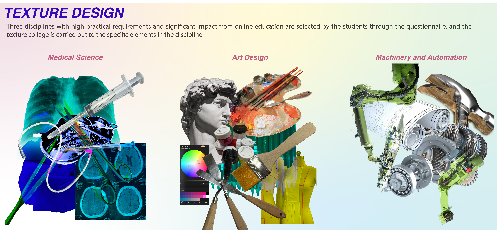
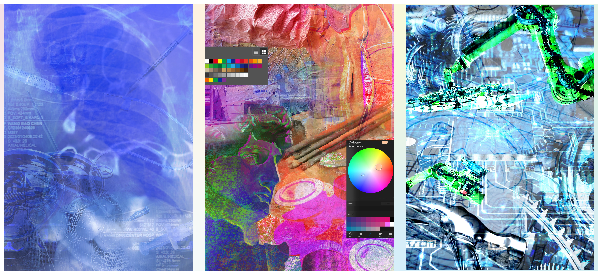
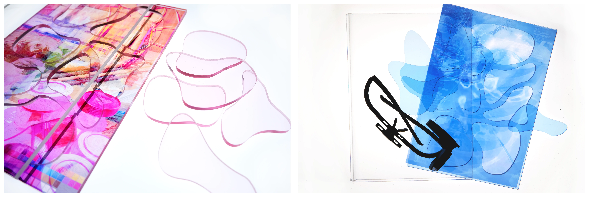
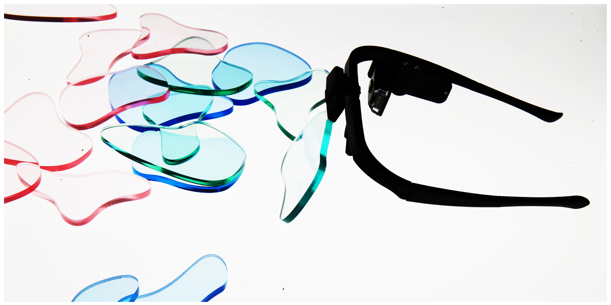
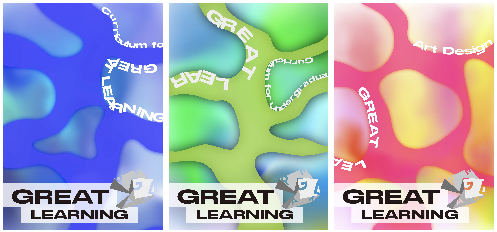

College Veding Machines
Conceptual Design

Conceptual Design
Memories of COVID


This project was developed during the COVID-19 pandemic, a period in which higher education rapidly shifted to fully online delivery. As universities closed and teaching moved onto digital platforms, the structure of learning began to resemble a standardized, remote service rather than a lived academic experience. The project responds to this condition through satire.
By designing a speculative “college vending machine,” the work proposes a system in which university education can be selected, purchased, and dispensed like a commodity. Courses, disciplines, and even degrees are presented as modular products available through a transactional interface. The vending machine becomes a metaphor for the industrialisation and automation of education — a system where learning is detached from campus life, embodied interaction, and critical exchange.
Through research data, questionnaire surveys, product design development, and interface simulation, the project constructs a complete functional narrative: users choose a subject, complete a simplified process, and receive packaged educational output. The absurdity of this mechanism reflects a deeper concern — when education is reduced to digital distribution, what remains of its social, intellectual, and experiential dimensions?
Rather than offering a literal solution, the project exposes the logic of commodification embedded within online learning infrastructures. It questions whether, under extreme digitisation, universities risk becoming service providers that “deliver” credentials rather than cultivate knowledge. The vending machine is not a proposal, but a critique — a controlled exaggeration of a system already in motion.











